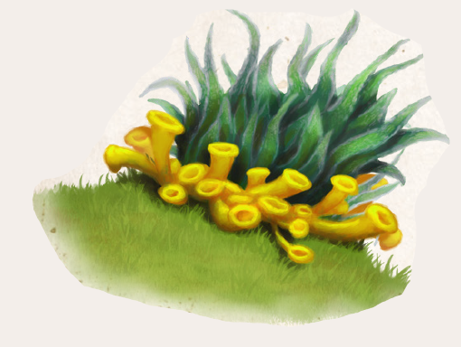

Es sind extreme Bedingungen, unter denen Talaschin wächst. Die Flechte überzieht Steine in der Gluthitze aller aventurischen Wüsten, wie auch in Eisgebieten und im Hochgebirge. Damit ist sie eine der widerstandsfähigsten Pflanzen ganz Aventuriens. Um zu gedeihen, genügt dem Talaschin offenbar Zugang zum Element Luft, denn Wasser ist im Ewigen Eis nur in gefrorener Form verfügbar und im Herzen der Khôm jahrelang gar nicht. Sichtbare Wurzeln bildet die Flechte nicht. Talaschin besteht im Zentrum aus einem dichten grünen Geflecht aus holzigen Fäden. Umgeben ist es von einem Ring sich überlappender gelber Trichter, deren Aussehen kleinen Pilzen ähnelt. Beide Teile sind ungemein robust und in ihrer Zähigkeit am ehesten mit Baumrinde zu vergleichen, selbst Tritte mit schweren Stiefeln fügen ihnen keinen Schaden zu.
Talaschin wird seit jeher genutzt, um den eigenen Körpergeruch zu verbergen, sei es von Jägern, die sich ihrer Beute unbemerkt nähern wollen, oder von eben jener Beute, die sich dem Zugriff ihrer Verfolger entziehen will. Dabei ist die Flechte denkbar einfach zu verarbeiten. Nachdem sie vom Untergrund geschabt wurde, muss sie nur zu einer Paste zerstampft und zerrieben werden. Wird sie auf den gesamten Köper aufgetragen, erzeugt dies zunächst ein kühlendes Gefühl, das nach einiger Zeit jedoch in Wärme umschlägt. Selbst ein geschulter Suchhund kann nun keine Witterung mehr aufnehmen. Frische Talaschinpaste ist jedoch nur etwa eine Stunde lang haltbar, weswegen die Flechte meist zu Talaschinsalbe verarbeitet wird. Hierzu muss der Pflanzenbrei mit einer neutralen Salbe vermengt werden. Dennoch ist es ratsam, die Salbe nicht allzu häufig anzuwenden, denn darauf reagiert die Haut zunächst mit Rötungen und später mit einem unangenehmen Kribbeln, das sein Opfer im übertragenen Sinn „um den Verstand“ bringen kann.
Alternative Namen: Talashin (Tulamidya)
Verbreitung:
Landschaftstyp: Hoher Norden, Wüstenrandgebiete & Wüsten, selten auch überall sonst
Regionen: Ewiges Eis, Wüstenrandgebiet und Wüsten (gelentlich), überall sonst auf Steinen (selten)
Suchschwierigkeit: 0
Bestimmungsschwierigkeit: 0
Anwendungen: 1/2/3/4/5/6
Wirkung:
Roh:
Berührung: Zu Paste zerstoßen und auf den ganzen Körper aufgetragen, neutralisiert die Pflanze für 1 Stunde jeglichen Körpergeruch der Anwenderin oder ggf. eines Objekts.
Die Paste fühlt sich im ersten Moment kalt auf der Haut an und danach zunehmend warm. Wenn ein Großteil der behandelten Körperstellen unter Kleidung liegt, entsteht nach Meisterentscheid eine Stufe Überhitzung.
Einatmung: Talaschin ist vollständig geruchlos und neutralisiert Gerüche.
Verzehr: keine
Verarbeitet: siehe Rezepte
Preis: 1 / 2 Silbertaler
Rezepte:
Pflanzliche Hilfsmittel: Talaschin-Tinktur
Alltagsarzneien und Volksbrauchtum:
Manch ein Pflanzenkundler vermutete bereits, dass Talaschin gut schmecken müsse, da es vor allem dort zu finden ist, wo kaum große Pflanzenfresser vorbeikommen.
Im Selbstversuch konnte dies noch niemand bestätigen, da die ledrig-holzige Konsistenz das Gebiss der menschlichen Forscher überfordert und kein abschließendes Urteil zulässt.
Passend ausgestattete Tiere könne man hingegen vielleicht mit der Flechte bestechen, so sie trotz der Geruchslosigkeit als Nahrung erkannt würde.
Haltbarkeit:
Roh: siehe Haltbarmachung